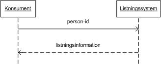
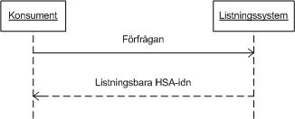
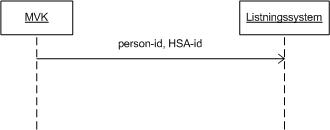

crm: carelisting
1.0.0 - draft
crm: carelisting - Local Development build (v1.0.0) built by the FHIR (HL7® FHIR® Standard) Build Tools. See the Directory of published versions
Nationell Listningstjänst hanterar information om lokalt valbara primärvårdstjänster och lokalt gjorda invånarval av primärvårdstjänster. Som producent av listningsinformation finns de lokala listningssystemen. Konsumenter av informationen är exempelvis Mina Vårdkontakter (MVK), Nationell Patientöversikt (NPÖ) samt övriga intressenter som kan tänkas vara intresserade av listningsinformation.



Anrop med personId — svar med lista av möjliga listningstyper.
Anrop med personId — svar med köstatus (i kö / inte i kö) och aktuell vårdenhet.
Tjänsten består av fem interaktioner:
Visa tjänsteval (GetListing) — konsumenten ställer en fråga till listningssystemet med ett person-id som inparameter. Listningssystemet returnerar information om listningen för den aktuella personen.
Visa möjliga tjänsteutövare (GetAvailableFacilities) — konsumenten frågar om vilka HSA-ID:n som en person kan välja att lista sig på. Listningssystemet returnerar en sammanställning över de HSA-ID:n som är valbara.
Göra tjänsteval (CreateListing) — en producent (i dagsläget MVK) skickar in ett meddelande som innehåller ett person-id samt ett HSA-id på den valda tjänsteutövaren.
Visa listningstyp (GetListingTypes) — konsumenten frågar med ett person-id. Listningssystemet returnerar en lista med koder över de listningstyper som personen har möjlighet att lista sig på.
Visa köstatus (GetPersonQueueStatus) — konsumenten frågar med ett person-id. Listningssystemet returnerar en köstatus (i kö, inte i kö) gällande personen i fråga samt den vård- och omsorgstagare varpå köstatusen gäller.
OBS: Källdokumentet saknar standard TKB-avsnitt 3. Innehållet ovan är baserat på avsnitt 2 (Informationsflöde) i källdokumentet.